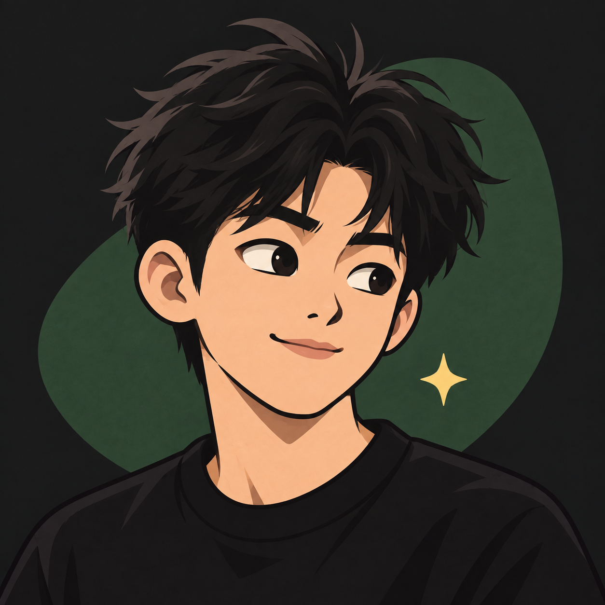

01 / 关于我
About me✦
开始自己选择要学什么、做什么。

我是杭之，
07 后，现在读大一。
高中毕业以后，我开始自己选择要学什么、做什么。我用 AI 学英语、安排健身，也尝试做设计、接单，把一些想法做成小项目。
我从小项目开始，把想法做出来，再看看它能不能真的解决问题。设计接单时碰到的偏差、做原型时的尝试，都会成为下一次尝试的依据。
这里会留下项目的进展、碰到的问题，以及我后来改变的想法。项目之外，我也在学英语、练健身，记录生活里的见闻。
如果你也在摸索相似的事，或是有个想动手试试的点子，欢迎来聊聊。
AI 与真实生活小项目与合作设计与接单英语健身
看看我已经尝试过什么